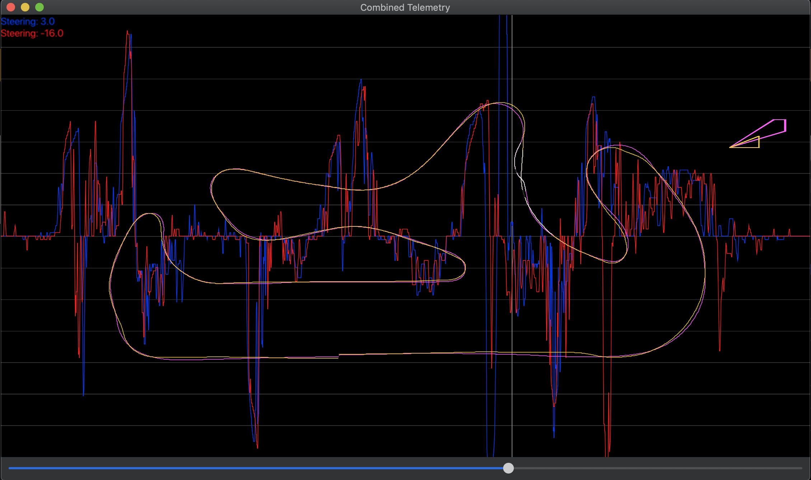
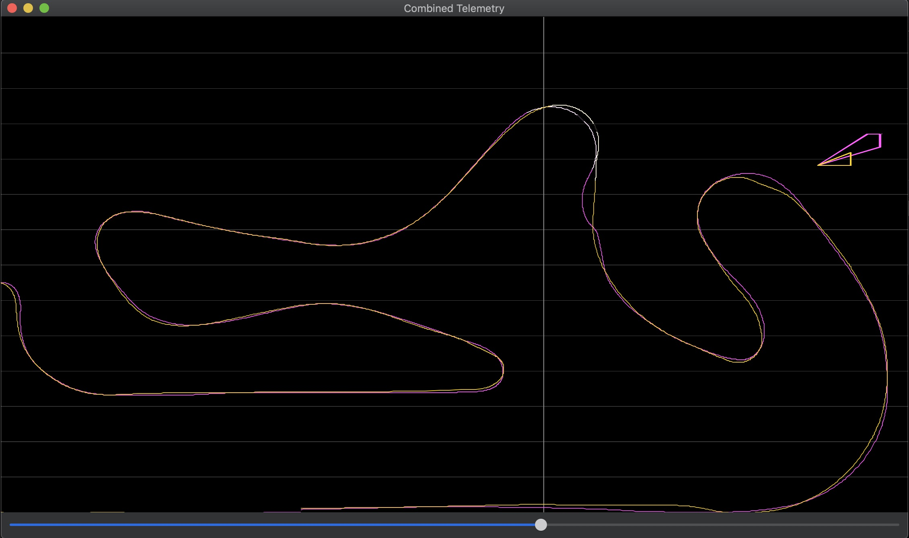
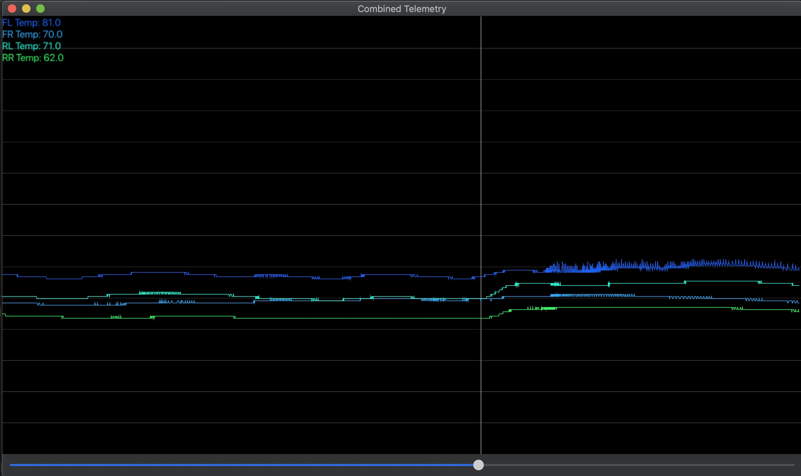

Get StartedGet Started
Get StartedGet StartedRough Idea Project Cars 2 Combined Window.
Shows the combined telemetry graphs of multiple laps and multiple race lines. All attributes selected in any lap window will show up on in the combined window as well. The combined window also has a slider so you can see your position on the race line and the value of the telemetry graph at that point of the race line.
Can be moved across the combined window to show what point on the race line and what value the telemetry was at that point.
 